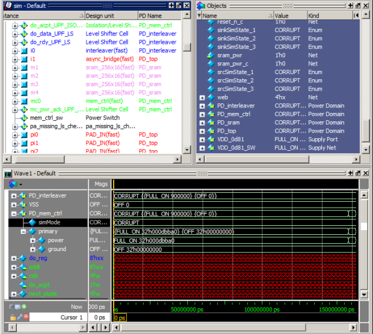

This task describes
how to display UPF objects in the Structure, Objects, and Wave windows
of the graphical user interface.
Procedure
- Open the Questa SIM GUI.
- Add the -pa_enable=debug argument
to your vopt command.
- Run your Power Aware simulation
flow as you normally do.
- Ensure the Objects, Structure,
and Wave windows are open:
view structure
view objects
view wave
- Locate and select a UPF object
in the Structure Window (refer to Figure 1).
- Click the UPF object to view
additional port and net information in the Objects window.
- Right-click the UPF object
and choose Add Wave to add
all of the related ports and nets in the Wave window.
The default value of supply
ports and nets in these windows are:
Voltage (Decimal)
State (Enum, UNDETERMINED,
FULL_ON, OFF, PARTIAL_ON).
Results
Figure 1. UPF Objects in the Structure
(sim), Objects, and Wave Windows